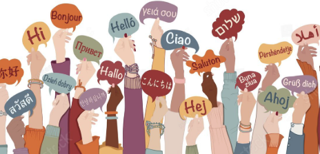

Description
Idioms are culturally embedded expressions that often lose meaning outside their original context. This post investigates how an LLM explains and translates idioms across cultures. Because idioms depend on shared cultural knowledge, they present a challenge for both human and AI communicators. This post tests whether an LLM can preserve meaning when explaining idiomatic language to a culturally unfamiliar audience.
Overall Objective: To assess how well an LLM handles culturally specific language and whether it prioritizes meaning over literal translation.
Prompts
Prompt: Explain the idiom “spill the tea” to someone unfamiliar with American slang.
Response: “Spill the tea” is an American slang expression that means to share gossip, secrets, or interesting details, especially about people or events.
“Tea” represents gossip or juicy information
“Spill” means to reveal or tell
So if someone says, “Come on, spill the tea,” they’re asking you to tell the full story—often something dramatic, surprising, or entertaining.
The phrase is usually informal, playful, and social, and it’s common in conversations among friends, on social media, and in pop culture. It doesn’t usually mean malicious gossip; it’s more about sharing insider details or updates people are curious about.
In simple terms: 👉 “Spill the tea” = “Tell me what really happened.”
Prompt: Provide a culturally equivalent expression from another language that conveys the same meaning.
Response: A close cultural equivalent in Spanish is:
“Suelta la sopa” (literally: “spill the soup”)
It means to reveal information, secrets, or gossip, often after someone has been holding back. The tone is informal and conversational, very similar to “spill the tea.”
Example:
“Vamos, suelta la sopa—¿qué pasó?” (“Come on, spill the tea—what happened?”)
Just like in English, it’s usually used among friends and doesn’t necessarily imply something serious or harmful—more like sharing the juicy details.
If you’d like, I can give equivalents from other languages too (French, Korean, Italian, etc.).
Prompt: What does 67 mean?
Response: In slang, “67” is often used online (especially on TikTok, Instagram, and texting) to mean:
👉 “I don’t care” or “whatever”
It comes from how it sounds when said aloud:
“six–seven” → “sick of it” / “it’s nothing to me” (loosely)
More generally, it’s used as a dismissive or indifferent response
Examples:
“Did you hear what they said about you?” → “67.” (meaning: I don’t care.)
“People are mad about it.” → “67 tbh.”
⚠️ Important note: “67” can also have non-slang meanings depending on context (a number, a year, a sports reference, or even a London postcode reference in UK drill culture). But in casual online slang, it usually signals indifference.
If you saw it in a specific post or sentence, I can explain exactly how it’s being used there.
Reflection
Overall, it seems that GPT is less up to date with slang and probably accumulates more information and understanding of a cultural term used with newer generations the longer it has been used. For example, something like “spill the tea” which has been around a relatively long time allowed GPT to provide a very accurate description for people who are not aware of the metaphorical meaning of this term. To compare and contrast, after using a term that is easy to explain and used more widely I asked GPT about a more recent, niche, and somewhat indescribable (atleast in my eyes) to see what it found the definition to be. This definition was a little less correct; although there is not an actual definition, GPT did not summarize it in a way as well. It did; however, recognize, likely within the context of the question prior that this was a cultural / tik tok term and responded accordingly - this was pretty interesting to me given the number 67 seemed tricky for GPT to define in any other way than the number itself. But without providing any other context, other than the topic of cultural meanings prior to that prompt, by just asking Chat GPT what 67 means, it immediatly recognized and connected it to the way it has been used in slang recently across media platforms.